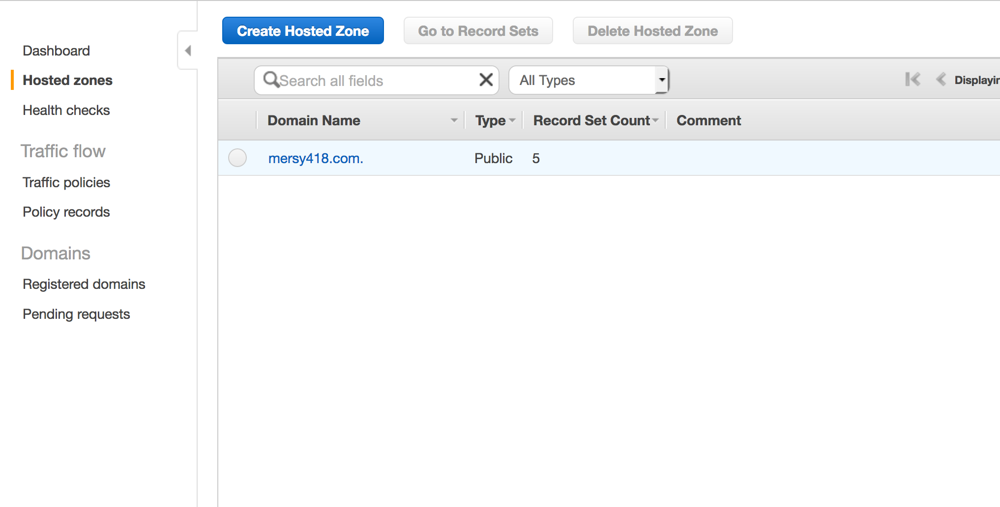
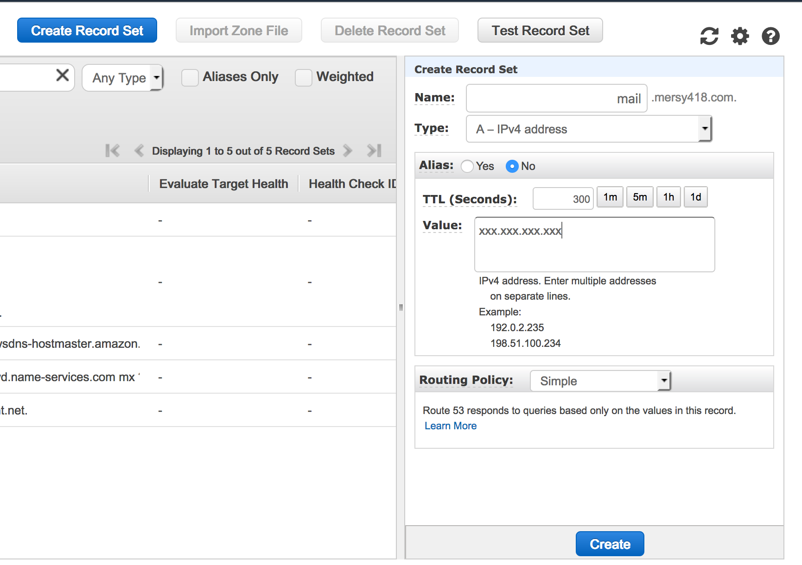
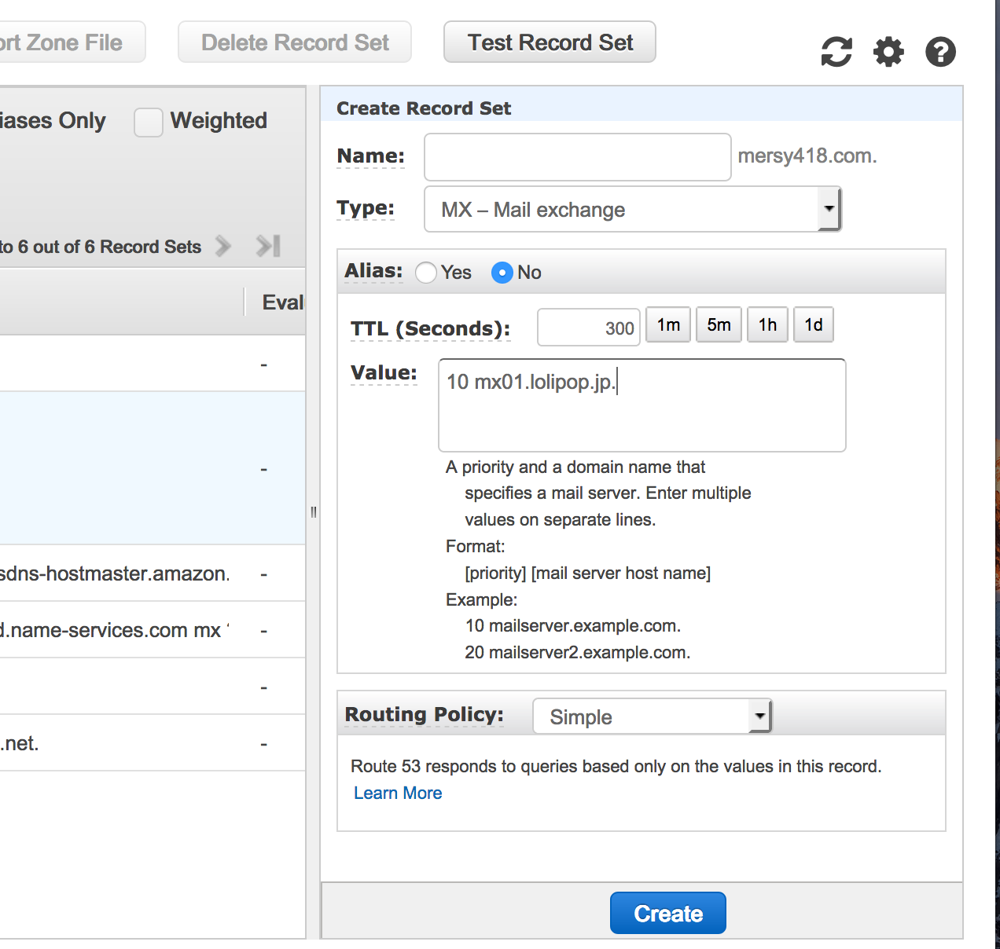

ドメインの移管
ドメインをvalue domain から Route53 へ移管する。
メール関係周りの設定
そのドメインのメールを1つ作ってgmailに転送している。
普段あまり使っていないので、今後はそのgmailアドレスに集約したいので、1年間は予備としてアドレスを受け取っておこうかな、と。
転送しつつ、自動返信とかできるようにしておきたい。
とりあえずさくらのメールボックスを契約。
セキュリティ対策を強化したメールサーバー専用プラン【メールボックス】
https://www.sakura.ne.jp/mail/
年額1029円なのでまぁこれで問題ないかな、と。
→ ロリポップの契約があったのでそちらですすめる
ロリポップに独自ドメインを追加しておき、今回用のメールアドレスを作成しておく。
転送設定まで完了。
AWSまわり
この辺を参考にDNSをまずRoute53にうつす。
Route53にドメインを移管する – blog.10rane.com
http://blog.10rane.com/2014/09/16/transferred-a-domain-to-route53/
お名前.comからAmazon Route 53へドメインを移管する ｜ Developers.IO
https://dev.classmethod.jp/cloud/aws/onamae-to-route53/
既存ドメインの DNS サービスを Amazon Route 53 に移行する - Amazon Route 53
http://docs.aws.amazon.com/ja_jp/Route53/latest/DeveloperGuide/MigratingDNS.html
そのうえでドメイン移管。
2017.12.24 ドメイン移管も完了
メール設定
ロリポップのメールサーバへのレコード情報はサイトに掲載されてないみたいなので、
|
|
とか契約してあるロリポップドメインのIPを調べる。
MXレコードは 10 mx01.lolipop.jp. らしい。
Route53の設定
Route53の「Hosted Zones」からドメインを選ぶ。

メール用に mail. のサブドメインでAレコードを追加。

これはいらなかったのかも？？
IPは先ほどしらべたロリポップのもの。
MXレコードを追加する。

こっちはサブドメインではないからそのままで追加。
|
|
で確認。
テストメールを送ったところ、ロリポップのWebメールにもメールがあり、転送先にも転送されていた。
Amazon Route53 にMXレコード登録する | あぱーブログ
https://blog.apar.jp/web/656/
独自ドメイン取得後ロリポップをメールサーバーだけに使いたい - Qiita
https://qiita.com/okamu_/items/01b6afeeae464bdee482
【ロリポップ】「Aレコードの変更をお願いいたします」の対処法 – ysklog
http://ysklog.net/server/4230.html
独自ドメイン取得後ロリポップをメールサーバーだけに使いたい - Qiita
https://qiita.com/okamu_/items/01b6afeeae464bdee482
サブドメインの設定
Route53に移せたので、
LightsailでDrupalを立ち上げる | mersy note
http://mersy.github.io/article/drupal-lightsail.html
で作成したサイトにサブドメインでアクセス出来るように設定してみる。
Crate Record Set で d8. のサブドメインに対して Aレコード で Lightsailの Public IP を登録。
でアクセス出来た。